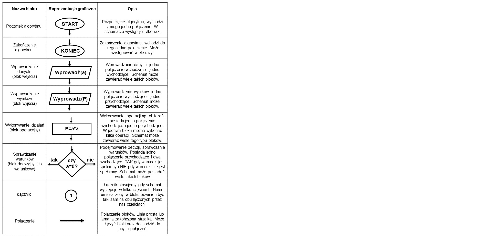
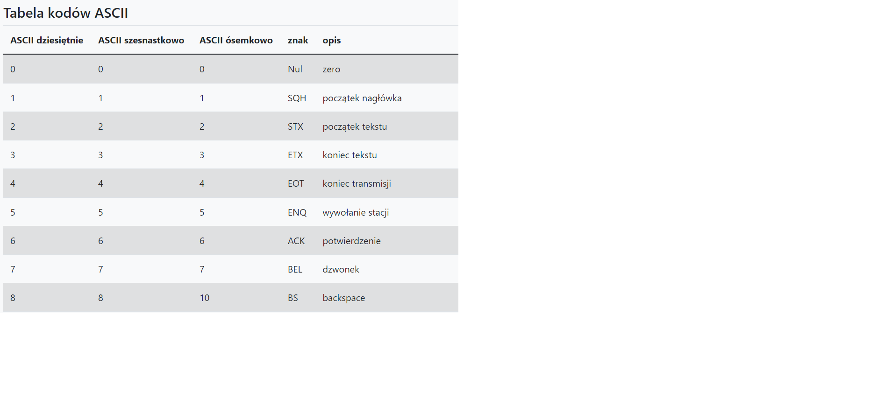

Algorytmy - teoria
1. Co to jest programowanie?
Programowanie to proces składający się z etapów:
a)tworzenia programu
b)testowanie programu
2. Dwie reguły stosowane w językach programowania
Język programowania musi mieść określone:
a)Reguły syntaktyczne - reguły składni wyrażeń i funkcji użytych w programie
b)Reguły semantyczne - semantyka języka programowania definiuje precyzyjnie znaczenie
poszczególnych symboli (instrukcje, operatory itp.) oraz ich funkcję w programie.
3. Algorytm- definicja
Algorytm jest to pewien ciąg czynności, który prowadzi do rozwiązania danego problemu
w skończonej ilości kroków
4. Cechy charakterystyczne algorytmów
- Poprawność - algorytm powinien zwracać poprawne wyniki.
- Jednoznaczność - algorytm powinien przy takim samym zbiorze danych wejściowych zwracać takie same wyniki.
- skończoność - dla każdego zbioru poprawnych danych wejściowych algorytm powinien zwracać wyniki w skończonej liczbie kroków
- efektywność - algorytm powinien prowadzić do rozwiązania problemu w jak najmniejszej liczbie kroków.
5. etapy konstruowania algorytmu
- Sformułowanie zadania.
- Określenie danych wejściowych.
- Określenie celu, czyli wyniku.
- Poszukiwanie metody rozwiązania, czyli algorytmu.
- Przedstawienie algorytmu w postaci: ...
- Analiza poprawności rozwiązania.
6. sposoby przedstawiania algorytmu wraz z opisem
- słowny opis
- schemat blokowy
- lista kroków
- za pomocą jednego z języków formalnych.
7. Specyfikacja problemu
Specyfikacja problemu to po prostu dokładny opis, zawierający wszystkie aspekty (parametry) problemu.
8. symbole stosowane w schematach blokowych

9. Reguły rysowania schematów blokowych
- Po zbudowaniu schematu blokowego nie powinno być takich strzałek, które z nikąd nie
wychodzą, lub do nikąd nie dochodzą.
- Każdy schemat blokowy musi mieć tylko jeden element startowy oraz co najmniej jeden
element końca algorytmu.
- Element łączący(strzałki łączące) powinien być rysowany w poziomie i pionie, załamania
pod kątem prostym.
10. Podziały algorytmów wraz z opisem
Algorytm liniowy
Algorytmem liniowym nazywamy taki algorytm, który ma postać listy kroków
wykonywanych zgodnie z ich kolejnością.
Algorytmy liniowe są zapisem obliczeń, które mają postać ciągu operacji rachunkowych
wykonywanych bez sprawdzania jakichkolwiek warunków.
Algorytm z warunkami (rozgałęzieniami)
Ten typ algorytmu musi mieć bloki decyzyjne czyli bloki sprawdzania warunków.
Algorytm numeryczne
Algorytmy, które wykonują działania matematyczne na danych liczbowych, nazywamy
algorytmami numerycznymi.
Algorytm typu dziel i zwyciężaj
Dzielimy problem na kilka mniejszych, a te znowu dzielimy, aż ich rozwiązania staną się
oczywiste,
Algorytmy iteracyjne
Iteracja jest to zapętlenie algorytmu, czyli wykonywania danych działań, dopóki warunek
iteracji nie zostanie spełniony. Jest ona podstawą wszystkich choć troszkę bardziej złożonych
algorytmów. Zazwyczaj ma ona składnię wykonuj "jakaś czynność" dopóki "jakieś wyrażenie
logiczne".
Algorytmy rekurencyjne
Rekurencje wykorzystuje się do rozwiązywania problemów gdzie powtarza się czynność aby
do niego dojść. Swoim działaniem przypomina iteracje. Jednak w tym przypadku funkcja
sama siebie wywołuje, dopóki nie otrzyma rozwiązania, natomiast tam mieliśmy
powtórzenie pewnej czynności określoną ilość razy.
11. Opis pojęć (złożoność algorytmu, złożoność obliczeniowa, złożoność czasowa, złożoność pamięciowa)
złożoność algorytmu - ilość zasobów potrzebnych do poprawnego działania danego
algorytmu
Złożoność obliczeniowa-Algorytm wykonujący najmniejszą ilość operacji podstawowych w
celu rozwiązania problemu.
Złożoność czasowa- Określa ilość operacji podstawowych potrzebnych do wykonania
algorytmu o danej wielkości wejściowej.
Złożoność pamięciowa- Określa ilość przestrzeni pamięci wirtualnej potrzebnej do
wykonania algorytmu z określonym zestawem danych wejściowych.
12. Co to są kody ASCII (+ kawałek tabeli kody ascii)
siedmiobitowy system kodowania znaków, używany we współczesnych komputerach oraz sieciach komputerowych, a także innych urządzeniach wyposażonych w mikroprocesor.
